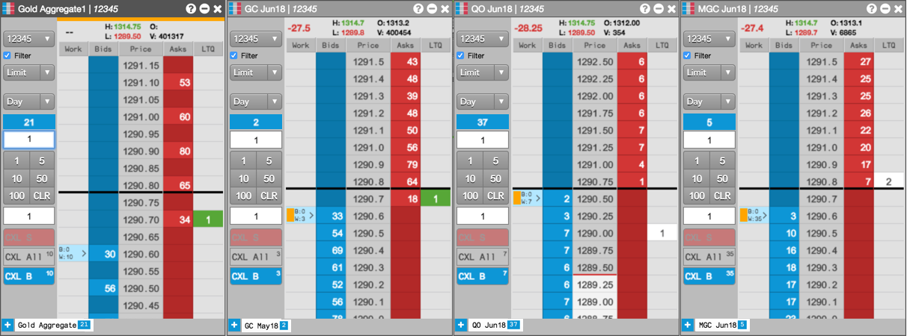

The Aggregator widget provides you with the ability to create a single aggregated instrument made up of multiple contracts and trade it as a single instrument. You can view an aggregated instrument in Market Grid and MD Trader, and you can trade an aggregated instrument with routing rules that determine where orders are routed.

Aggregator features include:
You can open Aggregator by clicking Widgets in the title bar. When the widget is minimized in your workspace, the Aggregator icon  appears in the title bar.
appears in the title bar.
Note: In addition to using MD Trader, you can drag and drop aggregated instruments from the Aggregator Manager window to the Market Grid.
When you open an Aggregator widget, it displays a list of the aggregated instruments you've created. You can create, launch, edit, copy, delete and search all of your aggregated instruments from this widget screen: